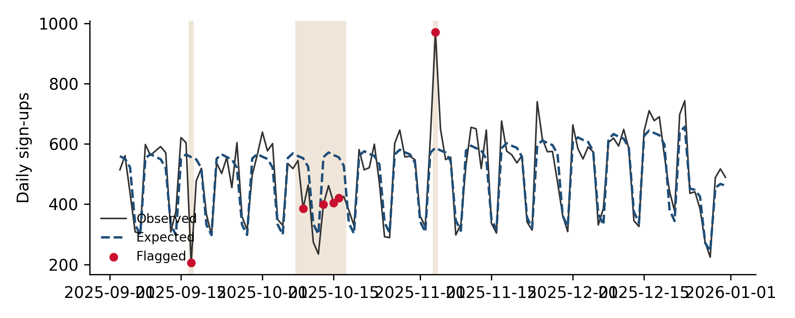

Chapter 20 Forecasting and anomaly detection
What to expect next week, month and quarter (for targets, pacing and budgets), and how to tell, day by day, whether a movement in a key metric is a real problem or ordinary noise.
20.1 Two jobs for the same model
Forecasting turns up in marketing science in two roles. Planning forecasts set targets and budgets: how many sign-ups to expect next quarter, how much spend that will take, whether the plan is on pace. Monitoring uses a forecast as a moving baseline: if today’s number is far outside what the model expected for a day like today, something may be wrong. The same model serves both, and the quality bar is the same: honest uncertainty and an evaluation on data the model has not seen.
A third role, the counterfactual forecast that estimates what would have happened without an intervention, was covered in Chapter 7. The difference is the question asked, not the method.
20.2 The data
Three years of daily sign-ups with a gentle upward trend, a strong weekly pattern (weekends are quiet), a yearly cycle, and holiday periods where activity drops.
import numpy as np, pandas as pd, warnings
warnings.filterwarnings("ignore")
import statsmodels.api as sm
from statsmodels.tsa.exponential_smoothing.ets import ETSModel
import matplotlib.pyplot as plt
rng = np.random.default_rng(20)
dates = pd.date_range("2023-01-01", "2025-12-31", freq="D")
t = np.arange(len(dates))
def is_holiday(idx):
return (((idx.month == 12) & (idx.day >= 24)) | ((idx.month == 1) & (idx.day <= 1))
| ((idx.month == 8) & idx.day.isin(range(10, 20))))
weekday_effect = np.array([0.05, 0.08, 0.06, 0.04, 0.0, -0.45, -0.55])
log_mu = (np.log(400) + 0.0004 * t + weekday_effect[dates.dayofweek]
+ 0.12 * np.sin(2 * np.pi * dates.dayofyear / 365.25) - 0.35 * is_holiday(dates))
signups = pd.Series(rng.negative_binomial(150, 150 / (150 + np.exp(log_mu))).astype(float), index=dates)20.3 Three forecasters and a fair test
We compare three approaches, from simplest to most structured:
- Seasonal naive: next week looks like last week. Surprisingly hard to beat, and the right baseline for any forecast.
- Exponential smoothing (ETS) with a damped trend and weekly seasonality, fitted on log sign-ups.
- Regression on log sign-ups with a trend, day-of-week effects, yearly Fourier terms and a holiday indicator.
The test is a rolling-origin backtest: at a series of dates through the final year, fit each model on everything before that date and forecast the next 28 days. Accuracy is measured with MASE (mean absolute error scaled by the error of a seasonal naive forecast in training; below 1 means better than naive) and the coverage of the 90% prediction interval (it should contain about 90% of actual days).
def design(idx):
X = pd.DataFrame({"trend": (idx - dates[0]).days / 365}, index=idx)
for k in range(1, 7):
X[f"dow{k}"] = (idx.dayofweek == k).astype(float)
for k in (1, 2, 3):
X[f"s{k}"] = np.sin(2 * np.pi * k * idx.dayofyear / 365.25)
X[f"c{k}"] = np.cos(2 * np.pi * k * idx.dayofyear / 365.25)
X["holiday"] = is_holiday(idx).astype(float)
return sm.add_constant(X, has_constant="add")
H = 28
rows = []
for origin in pd.date_range("2025-01-05", "2025-11-30", freq="28D"):
train = signups[:origin - pd.Timedelta(days=1)]
test = signups[origin:origin + pd.Timedelta(days=H - 1)]
scale = np.mean(np.abs(train.values[7:] - train.values[:-7]))
naive = np.tile(train.values[-7:], H // 7 + 1)[:H]
ets = ETSModel(np.log1p(train[-730:]).asfreq("D"), error="add", trend="add", damped_trend=True,
seasonal="add", seasonal_periods=7).fit(disp=False)
e = ets.get_prediction(start=test.index[0], end=test.index[-1]).summary_frame(alpha=0.1)
reg = sm.OLS(np.log1p(train), design(train.index)).fit()
r = reg.get_prediction(design(test.index)).summary_frame(alpha=0.1)
for name, f, lo, hi in [("Seasonal naive", naive, None, None),
("ETS", np.expm1(e["mean"]), np.expm1(e["pi_lower"]), np.expm1(e["pi_upper"])),
("Regression", np.expm1(r["mean"]), np.expm1(r["obs_ci_lower"]), np.expm1(r["obs_ci_upper"]))]:
f = np.asarray(f)
rows.append({"model": name, "MASE": np.mean(np.abs(test.values - f)) / scale,
"MAPE": np.mean(np.abs(test.values - f) / test.values),
"90% interval coverage": np.nan if lo is None else
np.mean((test.values >= np.asarray(lo)) & (test.values <= np.asarray(hi)))})
bt = pd.DataFrame(rows).groupby("model").mean()
print(bt.round(2).to_string(na_rep="n/a"))## MASE MAPE 90% interval coverage
## model
## ETS 1.03 0.11 0.92
## Regression 0.74 0.08 0.92
## Seasonal naive 1.34 0.14 n/aThe regression wins here, mainly because it knows about holidays and the yearly cycle, which ETS (with only weekly seasonality) and the naive forecast do not. Both model-based forecasters produce intervals with close to nominal coverage. In real data the ranking varies, which is the point of backtesting: the right model is the one that wins on your history, at your forecast horizon, not the one that sounds most sophisticated.
Evaluating a forecast on the data it was fitted on, or on a single holdout period. In-sample fit rewards overfitting, and one period can be unusually easy or hard. Use a rolling-origin backtest at the horizon you actually need.
20.4 Anomaly detection: is today’s number a problem?
Monitoring dashboards often flag a metric when it moves more than some percentage from yesterday or from last week. On data with strong weekly patterns, that rule fires every Saturday and Monday, and on holidays, and people learn to ignore it. A better rule compares each day with what a forecast expected for that day, and flags residuals that are large relative to the model’s normal error.
We take the last 120 days and inject three real problems: a sign-up outage (one day at 40% of normal), a tracking break (ten days at 80% of normal) and a bot spike (one day at 180%). The holiday period at the end of the year is a genuine, expected dip that should not be flagged.
window = signups.index[-120:]
observed = signups.copy()
truth = pd.Series(False, index=signups.index)
for day, factor in [("2025-09-17", 0.4), ("2025-11-04", 1.8)]:
observed[day] *= factor; truth[day] = True
brk = pd.date_range("2025-10-08", periods=10)
observed[brk] *= 0.8; truth[brk] = True
# Model fitted on history before the monitoring window, predicting each day in it
hist = observed[:window[0] - pd.Timedelta(days=1)]
model = sm.OLS(np.log1p(hist), design(hist.index)).fit()
resid = np.log1p(observed[window]) - model.predict(design(window))
mad = np.median(np.abs(model.resid - np.median(model.resid))) * 1.4826 # robust scale
robust_z = resid / mad
rules = {
"Day-over-day change > 25%": (observed.pct_change().abs() > 0.25)[window],
"Same weekday last week, change > 25%": (observed.pct_change(7).abs() > 0.25)[window],
"Model residual, |robust z| > 3": (robust_z.abs() > 3),
}
rows = []
for name, flag in rules.items():
tp = (flag & truth[window]).sum()
rows.append({"rule": name, "days flagged": int(flag.sum()), "true problems caught": int(tp),
"false alarms": int((flag & ~truth[window]).sum()), "problem days": int(truth[window].sum())})
print(pd.DataFrame(rows).set_index("rule").to_string())## days flagged true problems caught false alarms problem days
## rule
## Day-over-day change > 25% 38 5 33 12
## Same weekday last week, change > 25% 25 6 19 12
## Model residual, |robust z| > 3 6 6 0 12fig, ax = plt.subplots(figsize=(7, 2.8))
expected = np.expm1(model.predict(design(window)))
ax.plot(window, observed[window], lw=1, color="#333", label="Observed")
ax.plot(window, expected, lw=1.5, ls="--", label="Expected")
flagged = window[rules["Model residual, |robust z| > 3"].values]
ax.scatter(flagged, observed[flagged], color="#C8102E", zorder=3, s=20, label="Flagged")
for d in window[truth[window].values]:
ax.axvspan(d - pd.Timedelta(hours=12), d + pd.Timedelta(hours=12), color="#9A5B00", alpha=0.15, lw=0)
ax.set_ylabel("Daily sign-ups")
ax.legend(fontsize=8, loc="lower left")
plt.tight_layout()
plt.show()
Figure 20.1: Monitoring window: observed sign-ups, the model’s expectation, and days flagged by the residual rule. Injected problems are shaded.
The day-over-day rule drowns real problems in weekend alarms. The week-over-week rule is quieter but still fires on holidays and again a week after each problem, because last week’s anomaly becomes this week’s baseline. The model-based rule ignores the weekly pattern and the holidays, because it expects them, and flags the outage and spike. A modest tracking break is the hardest case: each day is only 20% low, so single-day thresholds catch only some of its days. Shifts that persist are better caught by change-point methods on the residuals or on ratios such as tracked to backend conversions (Chapter 2), which accumulate evidence over several days.
Good monitoring combines both: a residual rule for sharp one-day problems, and a change-point or cumulative-sum check for level shifts, run per market and per channel, with alerts routed to someone who can act.
20.5 Tools
- Classical:
statsmodels(ETS, SARIMAX, regression with Fourier terms), theforecastandfablepackages in R. - Prophet and NeuralProphet: decomposable trend-seasonality-holiday models, easy to set up for business data.
- Nixtla’s statsforecast and neuralforecast: fast implementations of many models, convenient for backtesting at scale.
- Foundation models such as Chronos: pretrained forecasters that can work without fitting; worth backtesting against the simple baselines before relying on them.
- Anomaly and change-point detection:
ruptures,adtk, Kats,Rbeast.
20.6 Checklist
- Is every forecast compared with a seasonal naive baseline in a rolling-origin backtest at the relevant horizon?
- Do prediction intervals achieve close to their nominal coverage in the backtest?
- Are holidays, promotions and known events in the model, so that expected dips are not treated as surprises?
- Do monitoring alerts compare each day with a model expectation, scaled by the model’s normal error, rather than with yesterday?
- Are persistent level shifts checked with change-point or cumulative methods, not only single-day thresholds?
- Is each alert routed to an owner, with the change log checked before escalating?
20.7 Further reading
- Forecasting: Principles and Practice (Hyndman and Athanasopoulos) and its Python read-along; skforecast, Greykite (LinkedIn) and Orbit (Uber).
- Prophet’s documentation on seasonality, holidays and regressors; NeuralProphet.
- Nixtlaverse, Chronos (Amazon) and its quickstart notebook, pytorch-forecasting, AutoTS, Kats (Meta), modeltime and timetk (R).
rupturesfor change points,adtkfor anomaly detection,stumpyfor matrix-profile pattern search, andaeonfor time-series machine learning.
Full links are in Appendix A.